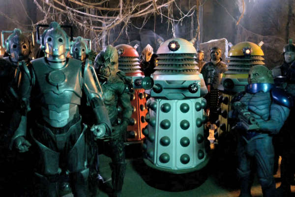

A História de Doctor Who
Você já ouviu falar em Doctor Who? Essa série britânica de ficção científica é uma das mais antigas e icônicas da televisão mundial. Produzida originalmente pela BBC, ela estreou em 1963 e conquistou milhões de fãs ao redor do planeta com suas viagens no tempo, alienígenas bizarros e histórias emocionantes. Vamos conhecer mais sobre esse universo fantástico?
O início de uma lenda
Doctor Who começou como uma série educativa para jovens, misturando história com ciência, mas rapidamente se transformou em um fenômeno da cultura pop. O personagem principal, conhecido apenas como "O Doutor", é um alienígena da raça dos Senhores do Tempo que viaja através do tempo e espaço em sua nave chamada TARDIS, disfarçada como uma cabine policial azul.
A TARDIS é maior por dentro do que por fora, e essa já é uma das primeiras surpresas que a série apresenta logo nos primeiros episódios.
O poder da regeneração
Uma das ideias mais geniais de Doctor Who foi criar o conceito de regeneração. Sempre que o Doutor está prestes a morrer, ele se transforma em uma nova versão de si mesmo, com nova aparência e personalidade. Esse recurso permitiu que a série continuasse por décadas, com diferentes atores interpretando o mesmo personagem.
Ao longo dos anos, já tivemos mais de 15 encarnações oficiais do Doutor, cada uma com seu estilo único e suas próprias aventuras inesquecíveis.
Companheiros e inimigos
O Doutor quase nunca viaja sozinho. Ao longo de sua jornada, ele é acompanhado por companheiros humanos (e às vezes alienígenas) que ajudam a guiar sua moralidade e a lidar com os perigos do universo.
Entre os inimigos mais famosos estão os Daleks - seres mutantes dentro de carapaças metálicas que vivem para destruir -, os Cybermen, e os assustadores Anjos Lamentadores, que se movem quando ninguém está olhando.
Doctor Who é mais do que uma série: é uma celebração da imaginação, da ciência, e da empatia. Se você gosta de histórias que misturam aventura, emoção e criatividade sem limites, essa é a série perfeita para você!